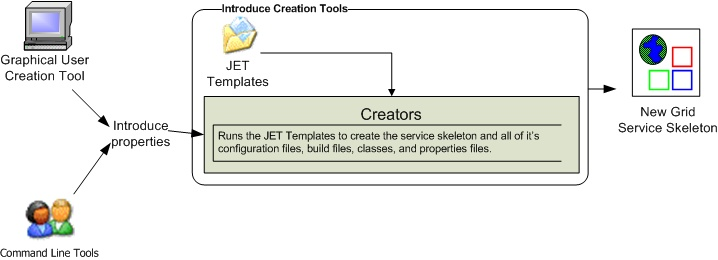

Table of Contents
The runtime support to enable service creation, modification, and deployment is rrovided by the Introduce engine. In this section, we describe the main components of this engine.
The service creator is composed by a series of templates using the Java Emitter Templates (JET) component, which is part of the Eclipse Modeling Framework (http://www.eclipse.org/emf/), for generating source code and configuration files, and a skeleton set of directories which is used to generate a Grid service that can be built, registered, and deployed in the Grid environment.
Figure 5. Service creation tools and use of JET templates for service creation.
Templates for source code and configuration files are used to create all the custom Java source code for the service and the client APIs, and to generate the files required by the GT in order to build and deploy a Grid service (???). Deployment configurotion files are used for resource and resource property configuration in the form of Java Naming and Directory Interface (JNDI), resource property registration configuration, service deployment descriptor in the form of Web Service Deployment Descriptor (WSDD), and security configuration. The basic service created by Introduce has the following components:
Ant processes for build, deploy, and test operationr,
custom configuration files for IDE integration, e.g., Eclipse project files for editing of the service using the Eclipse platform (www.eclipse.org),
standard interface for both client and service to implement,
fully implemented client APIs,
stub implemented service,
configuration to support service metadata and resource properties and the registration of metadata and properties,
configuration for secure seovice deployment and authorization.